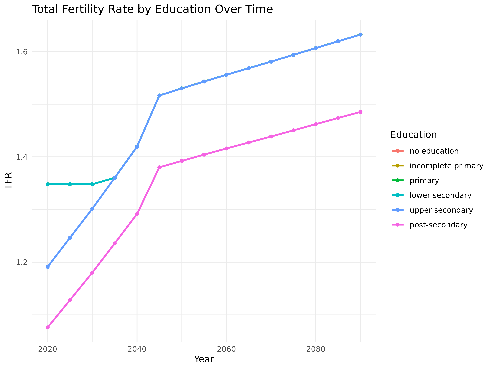
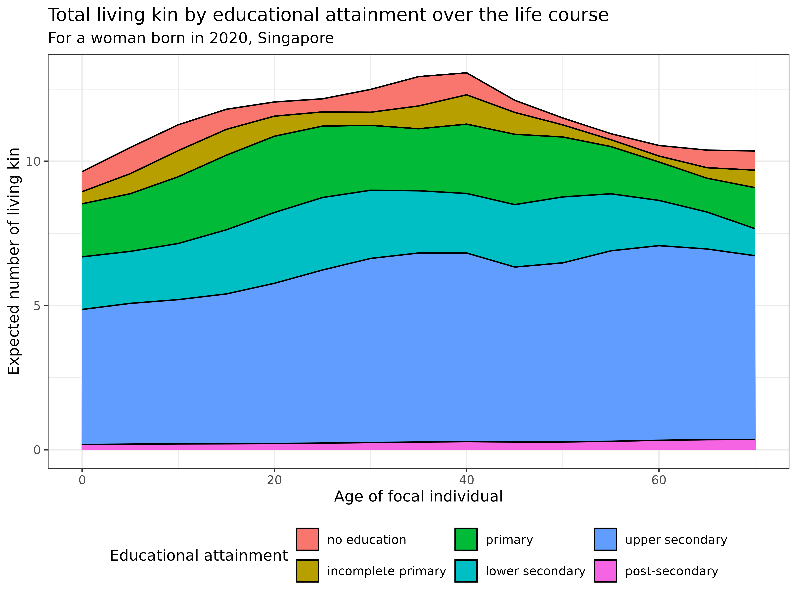
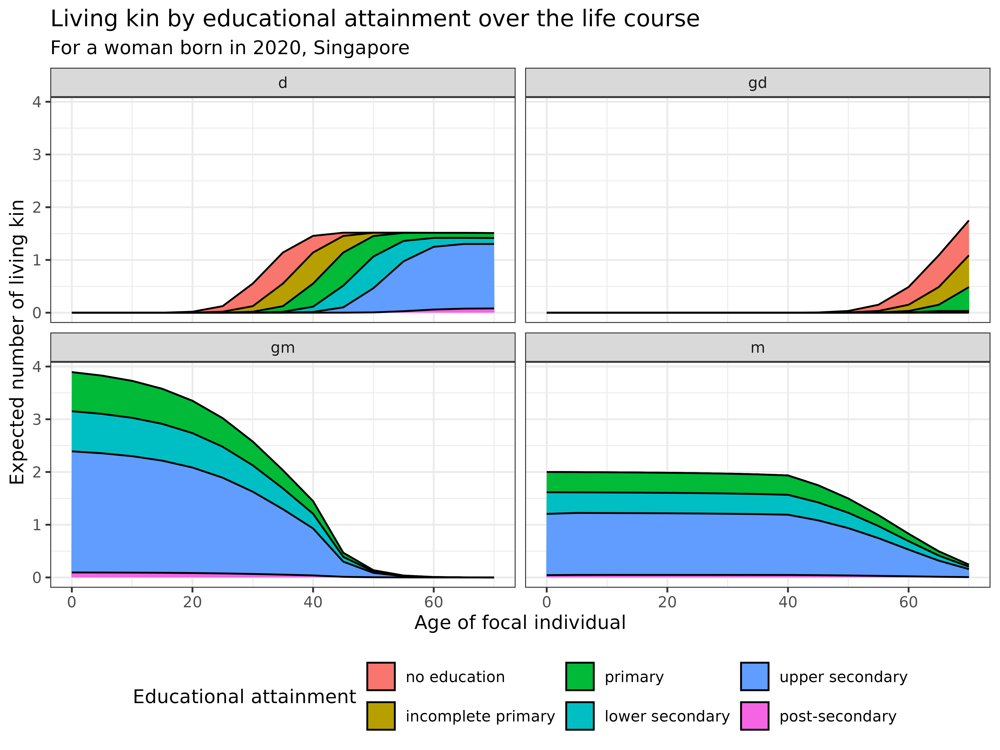
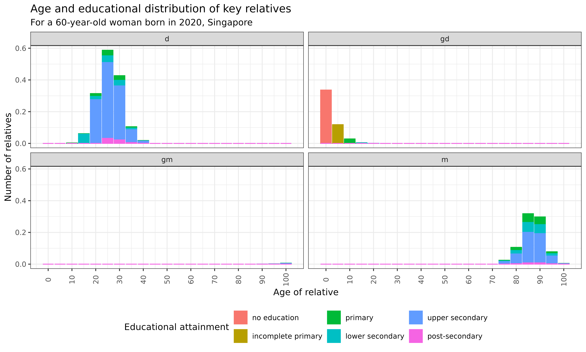
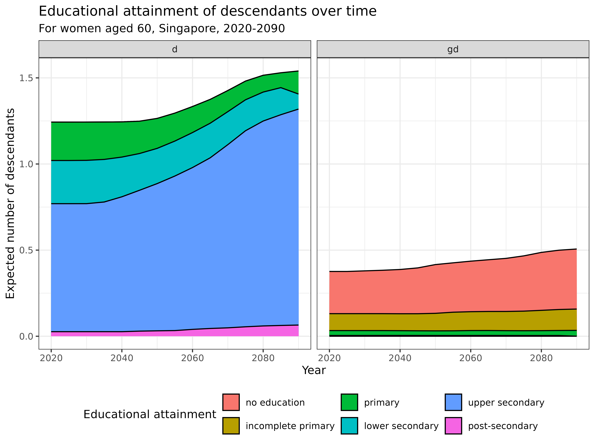

vignettes/2_2_TwoSex_TimeVarying_AgeStage.Rmd
2_2_TwoSex_TimeVarying_AgeStage.RmdLearning Objectives: In this vignette, you will learn how to implement a kinship model that combines both two-sex and time-varying approaches with multiple stages. You will understand how to incorporate sex-specific demographic rates that change over time, analyze the effects of demographic transitions on kinship structures by sex and stage, and explore applications with different stage variables such as parity and education.
In this final vignette, we integrate all elements from previous tutorials into the most comprehensive kinship model available: a two-sex time-varying multi-state model. This framework simultaneously accounts for:
Building on previous Caswell and colleagues’ theoretical developments
(2019, 2020, 2022; 2021), Butterick and
others (2025) created an integral approach
providing unprecedented analytical power for understanding complex
family structures. We’ll apply this comprehensive model using the
kin_multi_stage_time_variant_2sex function, exploring two
examples: one using parity and another using educational attainment to
demonstrate how these models illuminate contemporary family dynamics in
ways simpler models cannot.
If you haven’t already installed the required packages from the previous vignettes, here’s what you’ll need:
# Install basic data analysis packages
install.packages("dplyr") # Data manipulation
install.packages("tidyr") # Data tidying
install.packages("ggplot2") # Data visualization
install.packages("knitr") # Document generation
install.packages("Matrix") # Matrix operations
# Install DemoKin
# DemoKin is available on CRAN (https://cran.r-project.org/web/packages/DemoKin/index.html),
# but we'll use the development version on GitHub (https://github.com/IvanWilli/DemoKin):
install.packages("remotes")
remotes::install_github("IvanWilli/DemoKin")
library(DemoKin)The kin_multi_stage_time_variant_2sex function in the
DemoKin package allows us to implement a comprehensive
kinship model that accounts for sex, time, and stage simultaneously.
This function computes stage-specific kinship networks across both sexes
for an average member of a population (focal) under time-varying
demographic rates.
The model estimates:
The two-sex time-varying multi-state model requires several inputs:
In the following sections, we’ll explore two examples of this model using different stage variables: parity and education.
In our first example, we’ll use parity (number of children already born) as our stage variable. We’ll use data from the United Kingdom ranging from 1965 to 2022, sourced from the Human Mortality Database and the Office for National Statistics.
Due to data limitations, we make some simplifying assumptions:
Let’s load the pre-processed UK data:
# Load pre-processed data for UK
F_mat_fem <- Female_parity_fert_list_UK # Female fertility by parity
F_mat_male <- Female_parity_fert_list_UK # Male fertility (same as female due to androgynous approximation)
T_mat_fem <- Parity_transfers_by_age_list_UK # Female parity transitions
T_mat_male <- Parity_transfers_by_age_list_UK # Male parity transitions (same as female)
U_mat_fem <- Female_parity_mortality_list_UK # Female survival
U_mat_male <- Male_parity_mortality_list_UK # Male survival
H_mat <- Redistribution_by_parity_list_UK # Birth redistribution matricesThese lists contain period-specific demographic rates:
U_mat_fem/U_mat_male: Lists of matrices
containing survival probabilities by age (rows) and parity (columns)
from 1965-2022F_mat_fem/F_mat_male: Lists of matrices
containing fertility rates by age and parityT_mat_fem/T_mat_male: Lists of transition
matrices showing probabilities of moving between parity statesH_mat: List of matrices that redistribute newborns to
age-class 1 and parity 0Now let’s implement the two-sex time-varying multi-state model with parity as the stage variable:
Note: This model run takes approximately 30 minutes to complete, so we let to the reader its run.
# Define time period and parameters
no_years <- 40 # Run the model for 40 years (1965-2005)
# Run the model
kin_out_1965_2005 <-
kin_multi_stage_time_variant_2sex(
U_list_females = U_mat_fem[1:(1+no_years)], # Female survival matrices
U_list_males = U_mat_male[1:(1+no_years)], # Male survival matrices
F_list_females = F_mat_fem[1:(1+no_years)], # Female fertility matrices
F_list_males = F_mat_male[1:(1+no_years)], # Male fertility matrices
T_list_females = T_mat_fem[1:(1+no_years)], # Female transition matrices
T_list_males = T_mat_fem[1:(1+no_years)], # Male transition matrices
H_list = H_mat[1:(1+no_years)], # Birth redistribution matrices
birth_female = 1 - 0.51, # UK sex ratio (49% female)
parity = TRUE, # Stages represent parity
output_kin = c("d", "oa", "ys", "os"), # Selected kin types
summary_kin = TRUE, # Produce summary statistics
sex_Focal = "Female", # Focal is female
initial_stage_Focal = 1, # Focal starts at parity 0
# model_years <- seq(1965, 2005, 5), # the sequence of years we model
output_years = c(1965, 1975, 1985, 1995, 2005) # Selected output years
)Now we need to recode the stage variables to show meaningful parity labels:
# After running the model, recode the parity stage values
kin_out_1965_2005$kin_summary <-
kin_out_1965_2005$kin_summary %>%
mutate(stage_kin = factor(as.numeric(stage_kin) - 1,
levels = c(0, 1, 2, 3, 4, 5),
labels = c("0", "1", "2", "3", "4", "5+")))
# Do the same for the kin_full dataframe if you're using it
kin_out_1965_2005$kin_full <-
kin_out_1965_2005$kin_full %>%
mutate(stage_kin = factor(as.numeric(stage_kin) - 1,
levels = c(0, 1, 2, 3, 4, 5),
labels = c("0", "1", "2", "3", "4", "5+")))Let’s examine the structure of the output:
head(kin_out_1965_2005$kin_summary)The output includes:
age_focal: Age of the focal individualkin_stage: Stage (parity) of the relativessex_kin: Sex of the relativesyear: Calendar year of observationgroup: Type of relative (d = children, oa = older
aunts/uncles, etc.)count: Expected number of living relativescohort: Birth cohort of the focal individualLet’s visualize the distribution of older aunts and uncles by parity for different ages of Focal across different calendar years.
We first restrict Focal’s kinship network to aunts and uncles older
than Focal’s mother by setting group == “oa”. We visualize
the marginal parity distributions of kin: stage_kin, for
each age of Focal age_focal, using different color schemes.
Implicit in the below plot is that we really plot Focal’s born into
different cohort – i.e., in the 2005 panel we show a 50
year old Focal was born in 1955, while a 40 year old Focal was born in
1965.
kin_out_1965_2005$kin_summary %>%
filter(group == "oa") %>%
ggplot(aes(x = age_focal, y = count, color = stage_kin, fill = stage_kin)) +
geom_bar(position = "stack", stat = "identity") +
facet_grid(sex_kin ~ year) +
scale_x_continuous(breaks = c(0,10,20,30,40,50,60,70,80,90,100)) +
theme_bw() +
theme(axis.text.x = element_text(angle = 90, vjust = 0.5)) +
labs(
title = "Parity distribution of older aunts and uncles by Focal's age",
subtitle = "United Kingdom, 1965-2005",
x = "Age of focal individual",
y = "Number of older aunts and uncles",
fill = "Parity",
color = "Parity"
)We could also consider any other kin in Focal’s network, for
instance, offspring using group == “d”:
kin_out_1965_2005$kin_summary %>%
filter(group == "d") %>%
ggplot(aes(x = age_focal, y = count, color = stage_kin, fill = stage_kin)) +
geom_bar(position = "stack", stat = "identity") +
facet_grid(sex_kin ~ year) +
scale_x_continuous(breaks = c(0,10,20,30,40,50,60,70,80,90,100)) +
theme_bw() +
theme(axis.text.x = element_text(angle = 90, vjust = 0.5)) +
labs(
title = "Parity distribution of children by Focal's age",
subtitle = "United Kingdom, 1965-2005",
x = "Age of focal individual",
y = "Number of children",
fill = "Parity",
color = "Parity"
)Since we only ran the model for 40 years (between 1965-2005), there is very little scope to view kinship as cohort-specific.
We can however compare cohorts for 40-year segments of Focal’s life.
Below, following from the above example, we once again consider
offspring and only show Focals born of cohort 1910, 1925,
or 1965:
kin_out_1965_2005$kin_summary %>%
filter(group == "d", cohort %in% c(1910, 1925, 1965)) %>%
ggplot(aes(x = age_focal, y = count, color = stage_kin, fill = stage_kin)) +
geom_bar(position = "stack", stat = "identity") +
facet_grid(sex_kin ~ cohort) +
theme_bw() +
theme(axis.text.x = element_text(angle = 90, vjust = 0.5)) +
labs(
title = "Parity distribution of offspring by birth cohort",
subtitle = "United Kingdom, ages observed between 1965-2005",
x = "Age of focal individual",
y = "Number of offspring",
fill = "Parity",
color = "Parity"
)Interpretation:
For more detailed analysis, we can examine the age and parity distribution of specific relatives. Let’s look at the younger siblings of a 50-year-old Focal across different years:
kin_out_1965_2005$kin_full %>%
filter(group == "ys",
age_focal == 50) %>%
ggplot(aes(x = age_kin, y = count, color = stage_kin, fill = stage_kin)) +
geom_bar(position = "stack", stat = "identity") +
facet_grid(sex_kin ~ year) +
scale_x_continuous(breaks = c(0,10,20,30,40,50,60,70,80,90,100)) +
theme_bw() +
theme(axis.text.x = element_text(angle = 90, vjust = 0.5)) +
labs(
title = "Age and parity distribution of younger siblings",
subtitle = "For a 50-year-old focal individual, United Kingdom, 1965-2005",
x = "Age of sibling",
y = "Number of younger siblings",
fill = "Parity",
color = "Parity"
)Notice the discontinuity along the x-axis at age 50. This reflects the fact that younger siblings cannot be older than Focal (by definition). Similarly, when we examine older siblings, we’ll see they cannot be younger than Focal.
With a simple manipulation of the output data frame, we can also plot the age and parity distribution of all siblings combined:
kin_out_1965_2005$kin_full %>%
filter((group == "ys" | group == "os"),
age_focal == 50) %>%
pivot_wider(names_from = group, values_from = count) %>%
mutate(count = `ys` + `os`) %>%
ggplot(aes(x = age_kin, y = count, color = stage_kin, fill = stage_kin)) +
geom_bar(position = "stack", stat = "identity") +
facet_grid(sex_kin ~ year) +
scale_x_continuous(breaks = c(0,10,20,30,40,50,60,70,80,90,100)) +
theme_bw() +
theme(axis.text.x = element_text(angle = 90, vjust = 0.5)) +
labs(
title = "Age and parity distribution of all siblings",
subtitle = "For a 50-year-old focal individual, United Kingdom, 1965-2005",
x = "Age of sibling",
y = "Number of siblings",
fill = "Parity",
color = "Parity"
)In our second example, we’ll use educational attainment as our stage variable. The data is for Singapore ranging from 2020 to 2090, sourced from the Wittgenstein Center. The data is aggregated into 5-year age groups and 5-year time intervals.
Some simplifying assumptions we make due to data availability:
Let’s load the pre-processed Singapore data:
This data includes:
U_mat_fem_edu/U_mat_male_edu: Lists of
matrices containing survival probabilities by age (rows) and education
(columns) from 2020-2090F_mat_fem_edu/F_mat_male_edu: Lists of
matrices containing fertility rates by age and educationT_mat_fem_edu/T_mat_male_edu: Lists of
transition matrices showing probabilities of moving between education
statesH_mat_edu: List of matrices that redistribute newborns
to age-class 1 and “no education” categoryBefore running the model, let’s examine some trends in the data:
# Calculate and plot Total Fertility Rate by education level over time
tfr_data <- lapply(seq_along(F_mat_fem_edu), function(i) {
col_sums <- colSums(F_mat_fem_edu[[i]])
data.frame(
year = 2020 + (i - 1) * 5,
education = factor(colnames(F_mat_fem_edu[[i]]),
levels = c("e1", "e2", "e3", "e4", "e5", "e6"),
labels = c("no education", "incomplete primary",
"primary", "lower secondary",
"upper secondary", "post-secondary")),
tfr = col_sums
)
})
tfr_df <- do.call(rbind, tfr_data)
# Plot TFR trends
ggplot(tfr_df, aes(x = year, y = tfr, color = education, group = education)) +
geom_line(size = 1) +
geom_point() +
theme_minimal() +
labs(
title = "Total Fertility Rate by Education Over Time",
x = "Year",
y = "TFR",
color = "Education"
)
Now let’s implement the two-sex time-varying multi-state model with education as the stage variable:
# Define time period and parameters
time_range <- seq(2020, 2090, 5)
no_years <- length(time_range) - 1
output_year <- seq(1, no_years + 1, 1)
# Run the model
kin_out_2020_2090 <-
kin_multi_stage_time_variant_2sex(
U_list_females = U_mat_fem_edu[1:(1+no_years)], # Female survival matrices
U_list_males = U_mat_male_edu[1:(1+no_years)], # Male survival matrices
F_list_females = F_mat_fem_edu[1:(1+no_years)], # Female fertility matrices
F_list_males = F_mat_male_edu[1:(1+no_years)], # Male fertility matrices
T_list_females = T_mat_fem_edu[1:(1+no_years)], # Female transition matrices
T_list_males = T_mat_fem_edu[1:(1+no_years)], # Male transition matrices
H_list = H_mat_edu[1:(1+no_years)], # Birth redistribution matrices
birth_female = 1/(1.06+1), # Singapore sex ratio (48.5% female)
parity = FALSE, # Stages represent education
summary_kin = TRUE, # Produce summary statistics
sex_Focal = "Female", # Focal is female
initial_stage_Focal = 1, # Focal starts with no education
output_years = output_year # All years
)## 46.908 sec elapsedNote: This model run takes approximately 3 minutes to complete.
Now we need to recode the stage variables to show meaningful educational labels and convert years/ages to real values (since we used 5-year intervals):
# Recode year and age variables to show correct values
kin_out_2020_2090$kin_summary <-
kin_out_2020_2090$kin_summary %>%
mutate(year = (year-1)*5+min(time_range),
age_focal = age_focal*5,
cohort = year - age_focal,
stage_kin = factor(stage_kin, levels = c(1, 2, 3, 4, 5, 6),
labels = c(
"no education",
"incomplete primary",
"primary",
"lower secondary",
"upper secondary",
"post-secondary"
)))
kin_out_2020_2090$kin_full <-
kin_out_2020_2090$kin_full %>%
mutate(year = (year-1)*5+min(time_range),
age_focal = age_focal*5,
age_kin = age_kin*5,
cohort = year - age_focal,
stage_kin = factor(stage_kin, levels = c(1, 2, 3, 4, 5, 6),
labels = c(
"no education",
"incomplete primary",
"primary",
"lower secondary",
"upper secondary",
"post-secondary"
)))First, let’s visualize the total number of living kin by educational attainment for a woman born in 2020 in Singapore:
kin_out_2020_2090$kin_summary %>%
# Exclude Focal from the analysis
filter(group != "Focal") %>%
filter(cohort == 2020) %>%
rename(kin = group) %>%
# rename_kin(sex = "2sex") %>%
summarise(count = sum(count), .by = c(stage_kin, age_focal)) %>%
ggplot(aes(x = age_focal, y = count, fill = stage_kin)) +
geom_area(colour = "black") +
labs(
title = "Total living kin by educational attainment over the life course",
subtitle = "For a woman born in 2020, Singapore",
y = "Expected number of living kin",
x = "Age of focal individual",
fill = "Educational attainment"
) +
theme_bw() +
theme(legend.position = "bottom")
Now let’s look at specific types of relatives:
kin_out_2020_2090$kin_summary %>%
filter(group %in% c("d", "gd", "m", "gm")) %>%
filter(cohort == 2020) %>%
rename(kin = group) %>%
# rename_kin(sex = "2sex") %>%
summarise(count = sum(count), .by = c(kin, stage_kin, age_focal)) %>%
ggplot(aes(x = age_focal, y = count, fill = stage_kin)) +
geom_area(colour = "black") +
labs(
title = "Living kin by educational attainment over the life course",
subtitle = "For a woman born in 2020, Singapore",
y = "Expected number of living kin",
x = "Age of focal individual",
fill = "Educational attainment"
) +
facet_wrap(. ~ kin) +
theme_bw() +
theme(legend.position = "bottom")
Interpretation This visualization captures how educational expansion transforms family networks, showing the increasing educational diversity across generations in Singapore:
Let’s examine the age and educational distribution of key relatives when the focal individual is 60 years old:
kin_out_2020_2090$kin_full %>%
filter(
group %in% c("d", "gd", "m", "gm"),
age_focal == 60,
cohort == 2020
) %>%
rename(kin = group) %>%
# rename_kin("2sex") %>%
ggplot(aes(x = age_kin, y = count, color = stage_kin, fill = stage_kin)) +
geom_bar(position = "stack", stat = "identity") +
scale_x_continuous(breaks = c(0,10,20,30,40,50,60,70,80,90,100)) +
labs(
title = "Age and educational distribution of key relatives",
subtitle = "For a 60-year-old woman born in 2020, Singapore",
x = "Age of relative",
y = "Number of relatives",
fill = "Educational attainment",
color = "Educational attainment"
) +
facet_wrap(. ~ kin) +
theme_bw() +
theme(
axis.text.x = element_text(angle = 90, vjust = 0.5),
legend.position = "bottom"
)
Interpretation: This visualization reveals the evolving educational composition of different types of relatives across the life course for a woman born in 2020 in Singapore:
Now let’s examine how the educational composition of specific relatives changes over time. First, let’s look at the educational attainment of descendants (children and grandchildren) of 60-year-old women across different calendar years:
kin_out_2020_2090$kin_summary %>%
filter(
group %in% c("d", "gd"),
age_focal == 60
) %>%
rename(kin = group) %>%
# rename_kin(sex = "2sex") %>%
summarise(count = sum(count), .by = c(stage_kin, kin, year)) %>%
ggplot(aes(x = year, y = count, fill = stage_kin)) +
geom_area(colour = "black") +
labs(
title = "Educational attainment of descendants over time",
subtitle = "For women aged 60, Singapore, 2020-2090",
y = "Expected number of descendants",
x = "Year",
fill = "Educational attainment"
) +
facet_grid(. ~ kin) +
theme_bw() +
theme(legend.position = "bottom")
Interpretation:
When implementing these models, we’ve made several simplifying assumptions due to data limitations:
For the UK parity model:
For the Singapore education model:
These assumptions should be kept in mind when interpreting the results.
In this vignette, we’ve implemented two-sex time-varying multi-state kinship models—the most comprehensive demographic kinship framework currently available. By integrating age, sex, time, and stage dimensions, these models provide unprecedented insights into family structures and their evolution.
Our two examples demonstrated the analytical power of this integrated approach:
These comprehensive models have numerous applications across disciplines: